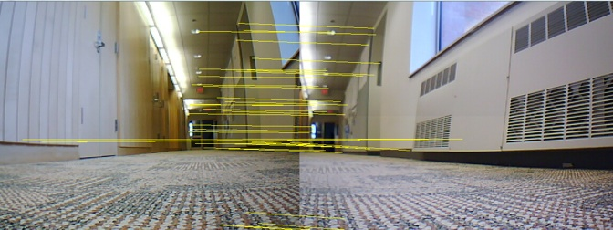

The Brains
The Robot Tour Guide has both brains and beauty. In order to know which way to go, and what tour to give the robot must first know where it is. This is no easy task, but with the help of Computer Vision algorithms and cutting-edge classification algorithms such as "brute force search," the robot quickly and gracefully identifies exactly where it is. Successful localization relies on two components: an accurate and invariant description of a place, and a reliable way to compare where it is to places it has already been.
The Robot Tour Guide uses a landmark recognition system called local features to describe an image. Essentially, this means that rather than looking at the "big picture" it finds highly descriptive, little details in an image that the robot should be able to find in another image of the same location. There are various conditions that make reproducing local features difficult. Firstly, changes in lighting can make it challenging to recognize a local feature between two images. Changes in perspective and rotation also pose problems. A good feature detector is able to reproduce interest points with some degree of reliability given the potential for light, scale, and perspective changes. The Robot Tour Guide does this using SURF. SURF comes to us from our friends in Switzerland. As with their cheese, the Swiss have once again provided us with a product that is both computationally inexpensive and reliable.
Our database images are represented to the robot as a series of SURF features. Now when the robot takes a new picture in order to figure out where it is, it must compare the local features in the new image to those in the database and determine which image is the closest to where it is. To do this, the robot checks the local features in the input image against all the local features in each database image. The comparisons entail finding the Euclidean Distance between the two feature vectors. If a match between two feature vectors is unambiguous (the first place match is much better than the second place match), then we are fairly certain it is an actual match. For each image, the tour guide tallies up the total number of these unambiguous matches with the input image. It then picks the image with the highest score and classifies the current location as the location of that image. Above is an illustration of a successful match. The yellow lines connect the features in the input image(left) to their corresponding matching features in the matched database image(right).